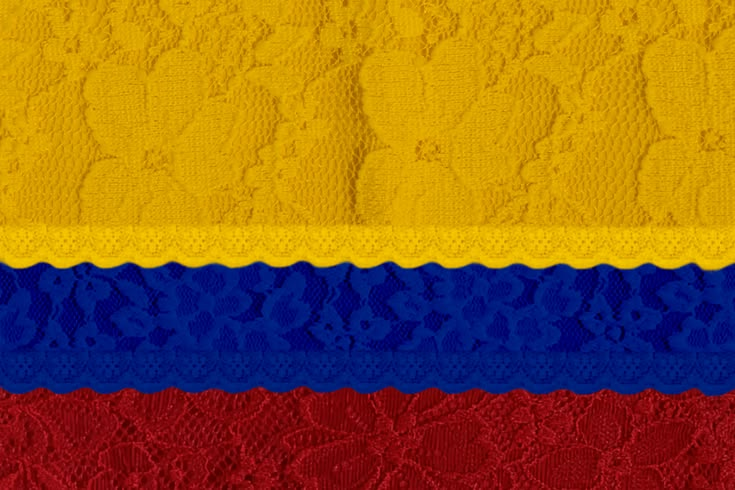
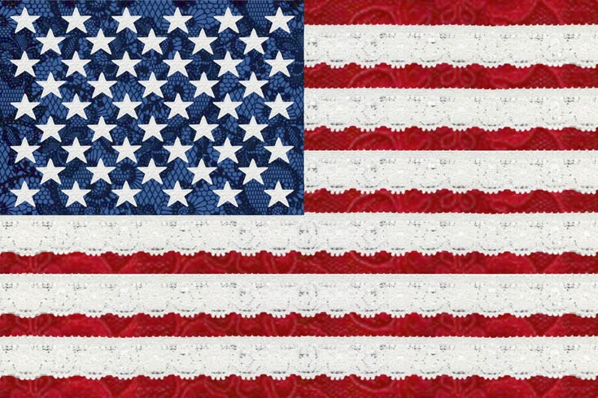
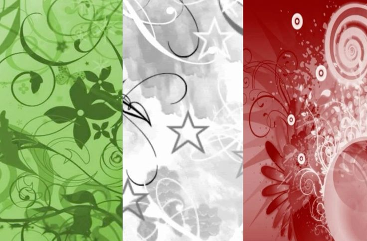
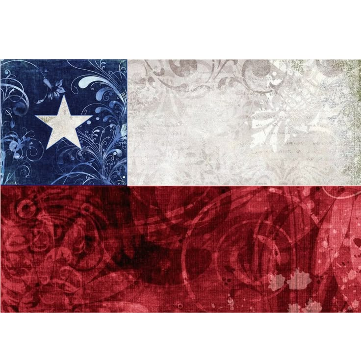
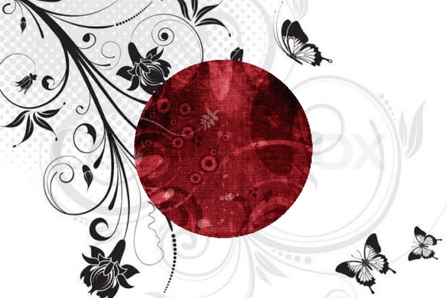

Explora la prensa internacional
Elige un país para consultar algunos de sus periódicos más conocidos.
Selecciona un país

Colombia
España

Estados Unidos

Italia
Corea del Norte
Brasil

Chile

Japón
DIRECTORIO DE PRENSA